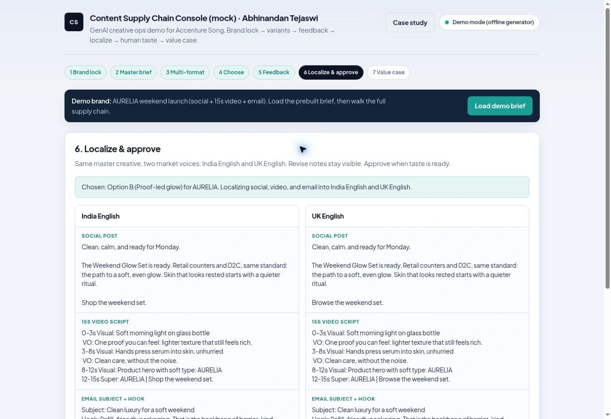

Content Supply Chain Console
One brief, multiple formats, human gates, localisation and approval.
The problem
Moving one idea across formats and markets creates more decisions than a single prompt can hold.
The build
A console that carries a locked brand and master brief through social, video and email options, human selection, feedback and market versions. The public demo uses an offline generator and a fictional sample brand.
The evidence


Work sample
Work sample / speculative demo. Not affiliated with Accenture and not an Accenture commission.